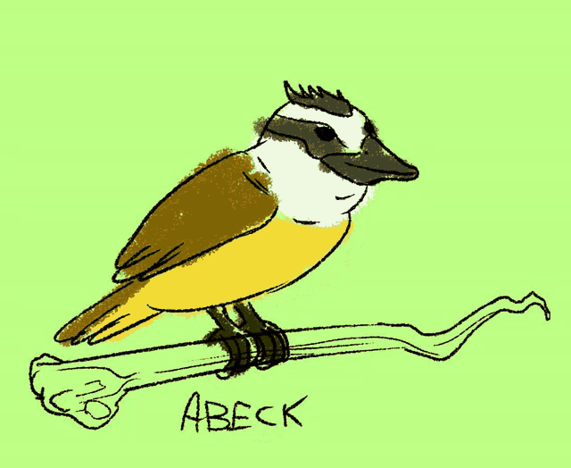

🎥 Multimídia Nativa (HTML5)
Ouça o Canto do Bem-te-vi:
Veja o Vídeo no Reprodutor Próprio:
🐦 Características
- Peito amarelo vibrante
- Máscara preta nos olhos
- Canto característico "bem-te-vi"
- Comportamento territorial
🍽️ Alimentação (ordem de preferência)
- Insetos
- Frutas
- Pequenos vertebrados
- Restos de comida urbana
🗺️ Habitat do Bem-te-vi
📊 Informações Gerais
| Ponto Positivo |
Ponto Negativo |
| Come barata |
Caga na sua cabeça |
| Canta legal |
Te acorda cedo |
| Topete maneiro |
Come ovo dos outros |
📚 Saiba mais (WikiAves)